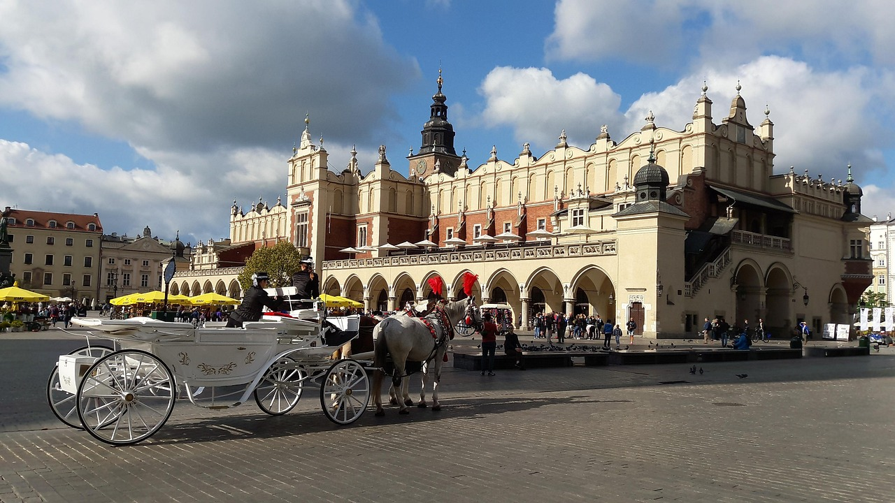
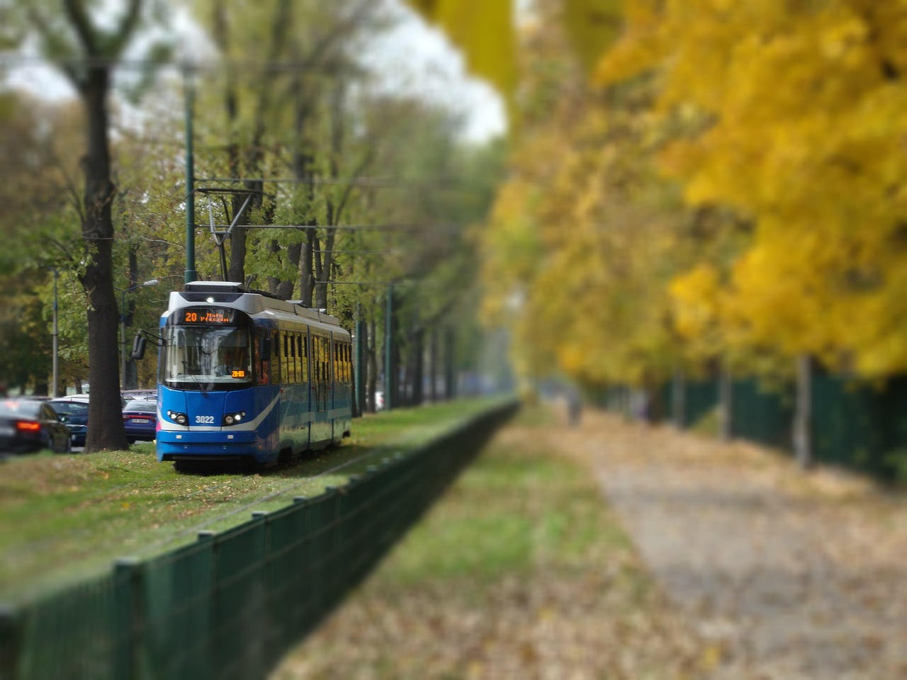
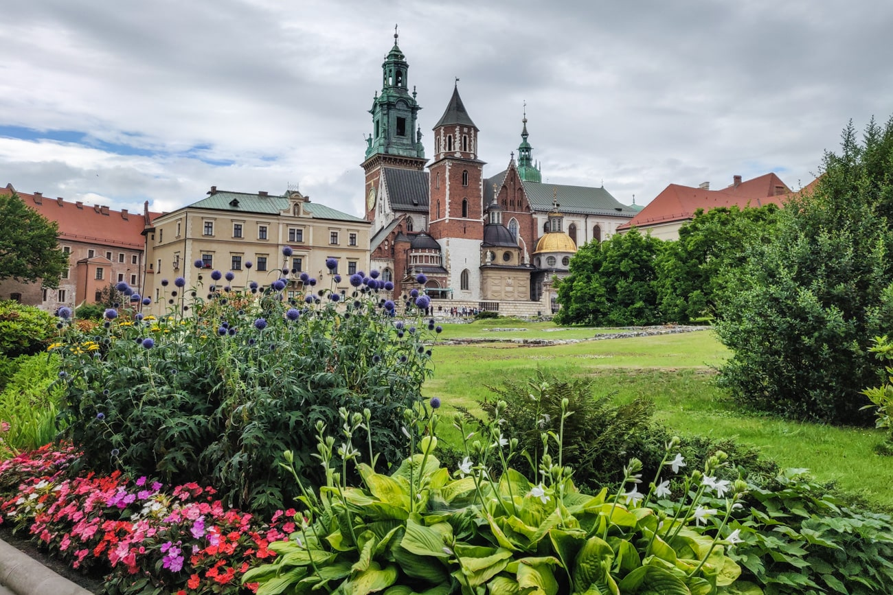
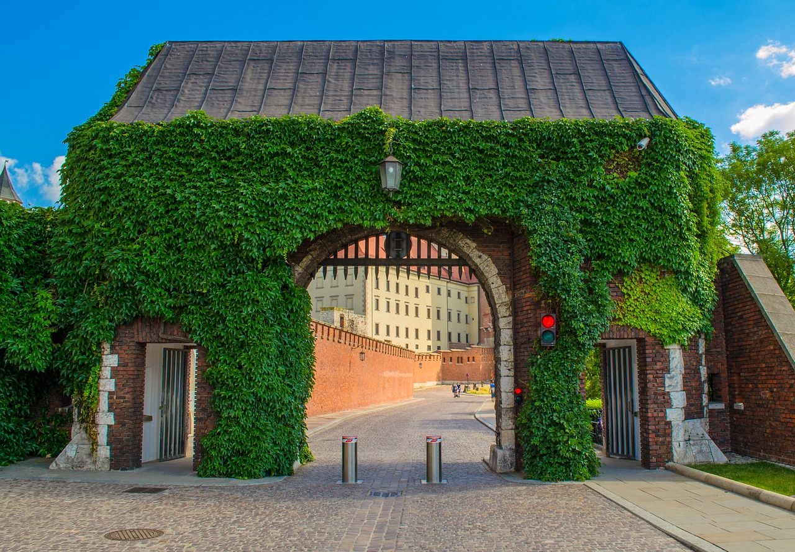

Cracovia — Kraków
Historia, cultura y experiencias imprescindibles en la antigua capital de Polonia.
Sobre Cracovia
Cracovia es una ciudad con un casco histórico excepcional, la plaza del mercado Rynek Główny, la colina Wawel y barrios con vida nocturna y culturales de Kazimierz. Aquí encontrarás fotos, recomendaciones y experiencias.
Imágenes






Experiencias recomendadas
- Paseo por Rynek Główny y subir a la torre de la Basílica
- Visitar el Castillo de Wawel
- Recorrer el barrio judío de Kazimierz
- Excursión a las Minas de Sal de Wieliczka